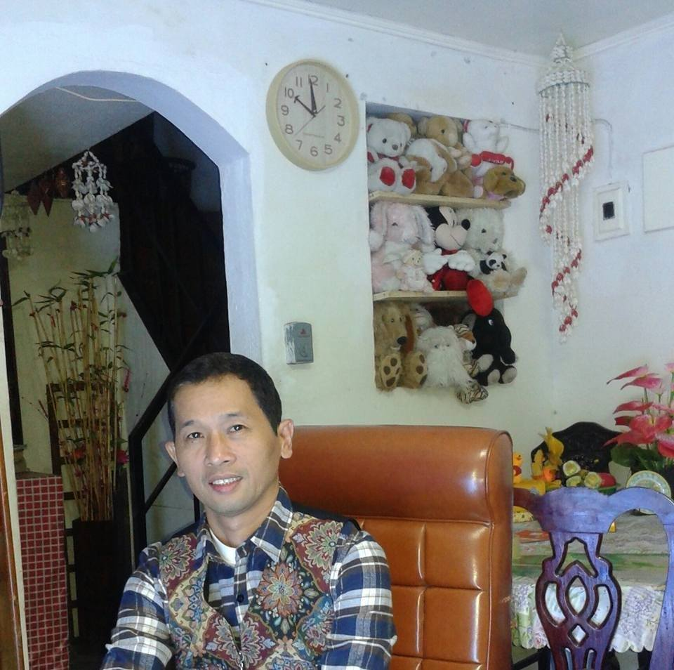

FAMILY

Father
Fathers are pillars in the development of a child's emotional well-being. Children look to their fathers to lay down the rules and enforce them. They also look to their fathers to provide a feeling of security, both physical and emotional. My father is a hardworking man who support his family everytime 24/7.
See profile

Mother
Mothers play a critical role in the family, which is a powerful force for social cohesion and integration. The mother-child relationship is vital for the healthy development of children. And mothers are not only caregivers; they are also breadwinners for their families. Mothers always give anything family.
See profile
Son
A son should make a father proud to the cusp of envy. A father should wish he had the life his son leads. Lastly, a son should assist and protect the family in the absence of his father. Father and son should exist independently and function interdependently at the same time. his role is to make family proud.
See profile
MENU is the webpage where you can access my other web pages. this page can help you navigate my simple website.